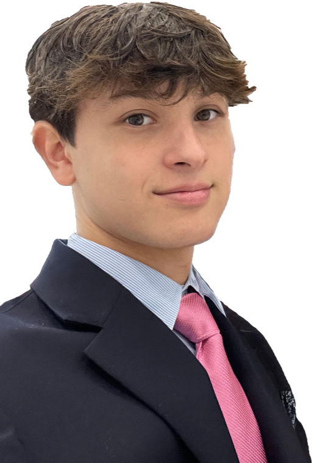

Background
I am currently a student at Strake Jesuit College Prep, having grown up in Houston, Texas. From a young age, I have always been interested in athletics and have competed in many sports including basketball, baseball, track, cross country, swim team, lacrosse, football, soccer, tennis, and golf.
Technical Expertise
I build websites, including this one, and mobile apps in React Native and TypeScript on Expo with Supabase backends; through Better U LLC I have shipped apps to the App Store. For my neuroscience projects I work with large connectome datasets and train spiking neural network models. I also program in Java and have used Unreal Engine for game projects.
Neuroscience & Technology
What interests me most is where neuroscience meets computing: how the wiring of a brain produces behavior, and what that wiring can teach us about building intelligent systems. At Georgetown this summer I saw fMRI and transcranial direct current stimulation research up close and studied how the gut may drive inflammation in Parkinson's disease.
On my own I work with the FlyWire connectome, the complete wiring map of a fruit fly's brain. One project runs the fly's central brain as a spiking network in the browser and trains it to read; another teaches the fly's mushroom body to play chess. I'm also building CogTrack, an app that tracks reaction time, inhibitory control and sustained attention over time. I want to keep going in computational neuroscience, connectomics and neurotechnology, with an eye on the ethics that come with them. See the projects.
Leadership Experience
Leadership has been a significant part of my life. At Strake Jesuit I am President of the Gaming Tournament Club, which runs fundraising tournaments and donates the proceeds to charity, and Vice President of the AI Development Club, which discusses the ethics and everyday uses of AI. I am also President of the SJ App Club, which teaches its members how to build mobile applications, House Captain of Faber House, and a Vice Captain of the Cross Country team. I actively participate in service both within and outside of my school, striving to be the best person I can possibly be.
Activities & Experience
Advanced Medical Neuroscience Internship, Leadership Initiatives ‐ Summer 2026. Researched the ethics of gut dysbiosis-driven inflammation and its potential role in Parkinson's disease, and presented to a panel of Georgetown neuroscientists. More on my projects page.
Co-Founder, Better U LLC ‐ 2025 to present. A social app studio I run with two other co-founders, shipping BetterU Social Fitness, Snapshot, and CogTrack. More on my projects page.
President, Gaming Tournament Club ‐ Strake Jesuit. Organizing fundraising tournaments with proceeds donated to charity.
Vice President, AI Development Club ‐ Strake Jesuit. Leading discussions on the ethics and practical uses of AI.
President, SJ App Club ‐ Strake Jesuit. Teaching members how to build mobile applications.
House Captain, Faber House ‐ Strake Jesuit.
National Honor Society. Participating in service and service-opportunity programming each year.
Varsity Cross Country ‐ Strake Jesuit. Team Vice Captain, competing and training year-round in cross country and track.
Guatemala Mission Trip ‐ July 12 to 19, 2026. Mission trip to Guatemala through Strake Jesuit with Orphan Outreach, built around cultural exchange. We spent the week with the kids there, playing games, talking, and sharing our faith in Christ with them, and spent a day in Antigua. See the Mentions page.
Academic Honors. Highest Honors, Principal Honor Roll, and Honor Roll recipient.
Faith & Philosophy
I have always been an active Catholic, and in recent years, I have delved deeper into the theology and philosophy behind my faith. This spiritual journey has helped shape my worldview and personal values.
Language & Linguistics
My interest in linguistics stems from being raised bilingual in English and Spanish. Starting freshman year, I took Mandarin Chinese and fell in love with linguistics. I plan to continue studying Mandarin throughout high school. Additionally, I'm learning German and have basic communication skills, while also beginning to learn Russian.
Future Aspirations
I dream of pursuing a career that makes a meaningful impact on people's lives. My goal is to make a difference in this world, and I am committed to working towards that objective through my education and personal development.